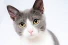

Первая контрольная
- Задания на простейшую HTML-верстку
- Несколько теоретических вопросов в формате выбора правильного варианта из нескольких предложенных
- Нет ограничений на используемые материалы или Интернет-ресурсы
- Вся необходимая информация - в слайдах к первому и второму занятиям и в коде практических заданий, доступным в этом же репозитории Github
- При хорошем выполнении всех контрольных курса - автоматически высшая оценка в конце курса
Инструкция по загрузке результатов на Github
- Убедитесь, что вы полностью выполнили начальную настройку окружения (см.
- Перейдите в папку локального репозитория (ui-development)
- Добавьте новый коммит с вашими изменениями:
git commit -a -m "Выполнена первая контрольная"
- Отправьте изменения в свой репозиторий Github:
git push
